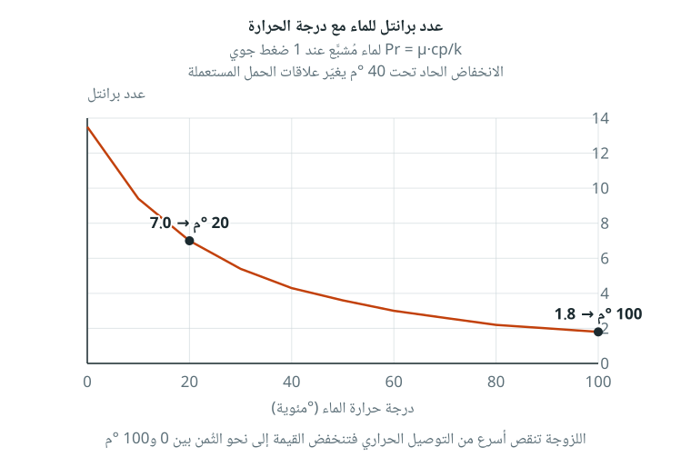

عدد برانتل
عدد برانتل يقيس نسبة انتشار كمية الحركة إلى انتشار الحرارة داخل المائع: Pr = μ·cp/k. قيمته تحدد أيّ الأثرين ينتشر أسرع، ومنها يأتي أسّ برانتل في علاقات الحمل كلها.
عدد برانتل مقدار لابُعدي يعرَّف كـ Pr = μ·cp/k، وهو نسبة الانتشار الجزيئي لكمية الحركة (اللزوجة الحركية ν = μ/ρ) إلى الانتشار الجزيئي للحرارة (α = k/(ρ·cp))؛ تُختصر الكثافة من البسط والمقام فيبقى للمائع مؤشر واحد يجمع لزوجته وسعته الحرارية وموصليته. في الماء عند 20 °م تساوي 7.0، أي أن أثر اللزوجة ينتشر نحو سبعة أضعاف سرعة انتشار الحرارة، فتكون الطبقة الحركية أسمك من الطبقة الحرارية؛ وفي الهواء عند 20 °م تساوي 0.71، فالطبقة الحرارية أسمك من الحركية. هذا الاختلاف هو السبب في أن علاقة Dittus–Boelter ترفع نوسلت في الماء إلى نحو 79 مقابل 32 في الهواء عند رقم رينولدز 10,000 في الأنبوب نفسه. وفي الغازات تبقى Pr قريبة من 0.7 إلى 1.0 لأن ν وα تتناسبان مع الضغط بالطريقة نفسها، ولذلك تُعامل الغازات بقيمة شبه ثابتة حتى مع تغيّر كبير في الكثافة.
كيف تعمل الظاهرة؟
الحرارة والسرعة تنتشران في المائع بالآلية الجزيئية ذاتها: تصادم الجزيئات ينقل العزم من الطبقة الأسرع إلى الأبطأ، وينقل الطاقة الحرارية من الطبقة الأسخن إلى الأبرد. اللزوجة تقيس مقاومة الجزيئات للانزلاق، والتوصيل الحراري يقيس سرعة نقل الطاقة بينها؛ فإذا كانت اللزوجة كبيرة نسبيًّا انتشر أثر الحركة قبل أثر الحرارة وتكوّنت طبقة حركية أسمك من الطبقة الحرارية، ومن نسبة السماكتين تخرج علاقة بروفايل السرعة ببروفايل الحرارة قرب السطح.
العلاقة بالأرقام
الماء عند 20 °م: μ = 1.002×10⁻³ باسكال·ثانية، cp = 4182 جول/(كغ·كلفن)، k = 0.598 واط/(متر·كلفن) ⇒ Pr = 7.0 بلا وحدة. الهواء عند 20 °م: Pr ≈ 0.71. عند رينولدز 10,000 في أنبوب أملس تعطي Dittus–Boelter نوسلت نحو 79 للماء و32 للهواء، أي أن مضاعف الحمل الحراري يختلف 2.5 ضعفًا بمجرد تغيير المائع مع بقاء السرعة والقطر.
مفاهيم متقاربة
عدد برانتل ليس عدد بيتانل: بيتانل يقارن قوة الطفو بقوة اللزوجة ويحكم الحمل الحرّ، أما برانتل فيقارن انتشار كمية الحركة بانتشار الحرارة ولا يذكر الطفو ولا السرعة. ولا يُخلط كذلك مع عدد لويز Le = α/D الذي يقارن انتشار الحرارة بانتشار الكتلة في التجفيف والاحتراق، ولا مع عدد شميدت Sc الذي يقارن انتشار الكمية الحركية بانتشار الكتلة.
حدود التطبيق
يصلح برانتل خاصيةً للمائع في الجريان الصفحي والحملي القسري؛ وعند تغيّر كبير في الحرارة عبر الطبقة يُقيَّم عند حرارة الغشاء (T∞ + Ts)/2 أو تُستعمل نسخة معدّلة للبروفايل المُصحَّح. ولا يعبّر عن الأثر الحراري للانتشار الكتلي ولا عن أثر التوتر السطحي في الغليان والغشاء، فلكل من هذه الظواهر عددها الخاص، ولذلك تُضاف إلى Pr أعداد أخرى عند الدخول في الغليان أو التكثيف أو الجريان الحبيس.

| الكمية | القيمة | المصدر |
|---|---|---|
| لزوجة الماء الديناميكية عند 20 °م | 1.002 ملي باسكال·ثانية | [1] |
| عدد برانتل للماء عند 20 °م | 7.0 بلا وحدة | [1] |
| عدد برانتل للهواء الجاف عند 20 °م | 0.71 بلا وحدة | [2] |
| صيغة التعريف | Pr = μ·cp/k بلا وحدة | [3] |
المصادر
- 1 Prandtl Number — The Engineering ToolBox. www.engineeringtoolbox.com/prandtl-number-d_1068.html · اطُّلع عليه 2026-11-19
- 2 Air - Prandtl Number — The Engineering ToolBox. www.engineeringtoolbox.com/air-prandtl-number-viscosity-heat-capacity-thermal-conductivity-d_2009.html · اطُّلع عليه 2026-11-19
- 3 Prandtl number — Wikipedia (الإنجليزية). en.wikipedia.org/wiki/Prandtl_number · اطُّلع عليه 2026-11-19
استشهد بهذا المصطلح
الصيغتان مبنيتان من بيانات الصفحة نفسها: العنوان والتاريخ ورابط النسخة المنشورة.
عدد برانتل. (2026). ديوان المعرفة — انفراد. https://infiradev.com/diwan/terms/prandtl-number.html
@misc{prandtl-number2026,
title = {عدد برانتل},
howpublished = {{ديوان المعرفة — انفراد} — مرجع علمي عربي},
year = {2026},
url = {https://infiradev.com/diwan/terms/prandtl-number.html},
urldate = {2026-11-19},
note = {مراجعة علمية: عبدالله الهويدي — مراجعة في تطبيق انفراد}
}
راجعه: عبدالله الهويدي — مراجعة في تطبيق انفراد · 2026-11-19 · آخر تحديث 2026-11-19